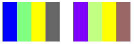

Shearing increases or decreases a color component by an amount proportional to another color component. For example, consider the transformation where the red component is increased by one half the value of the blue component. Under such a transformation, the color (0.2, 0.5, 1) would become (0.7, 0.5, 1). The new red component is 0.2 + (1/2)(1) = 0.7.
The following example constructs an Image object from the file ColorBars4.bmp. Then the code applies the shearing transformation described in the preceding paragraph to each pixel in the image.
Image image(L"ColorBars4.bmp");
ImageAttributes imageAttributes;
UINT width = image.GetWidth();
UINT height = image.GetHeight();
ColorMatrix colorMatrix = {
1.0f, 0.0f, 0.0f, 0.0f, 0.0f,
0.0f, 1.0f, 0.0f, 0.0f, 0.0f,
0.5f, 0.0f, 1.0f, 0.0f, 0.0f,
0.0f, 0.0f, 0.0f, 1.0f, 0.0f,
0.0f, 0.0f, 0.0f, 0.0f, 1.0f};
imageAttributes.SetColorMatrix(
&colorMatrix,
ColorMatrixFlagsDefault,
ColorAdjustTypeBitmap);
graphics.DrawImage(&image, 10, 10, width, height);
graphics.DrawImage(
&image,
Rect(150, 10, width, height), // destination rectangle
0, 0, // upper-left corner of source rectangle
width, // width of source rectangle
height, // height of source rectangle
UnitPixel,
&imageAttributes);
The following illustration shows the original image on the left and the sheared image on the right.

The following table shows the color vectors for the four bars before and after the shearing transformation.
| Original | Sheared |
|---|---|
| (0, 0, 1, 1) | (0.5, 0, 1, 1) |
| (0.5, 1, 0.5, 1) | (0.75, 1, 0.5, 1) |
| (1, 1, 0, 1) | (1, 1, 0, 1) |
| (0.4, 0.4, 0.4, 1) | (0.6, 0.4, 0.4, 1) |
Â
Â
Â